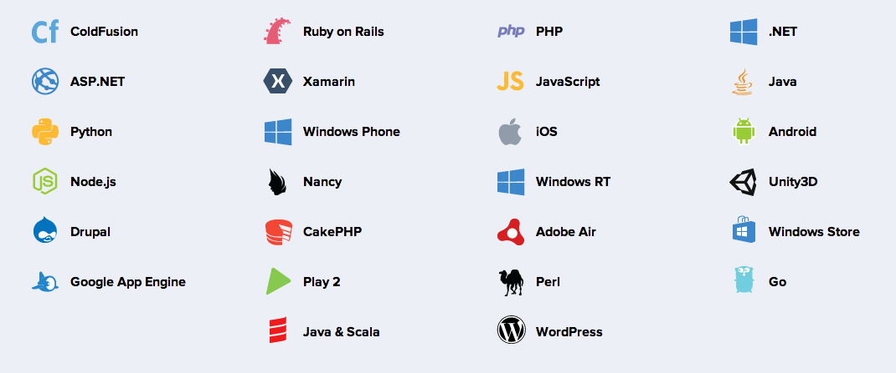
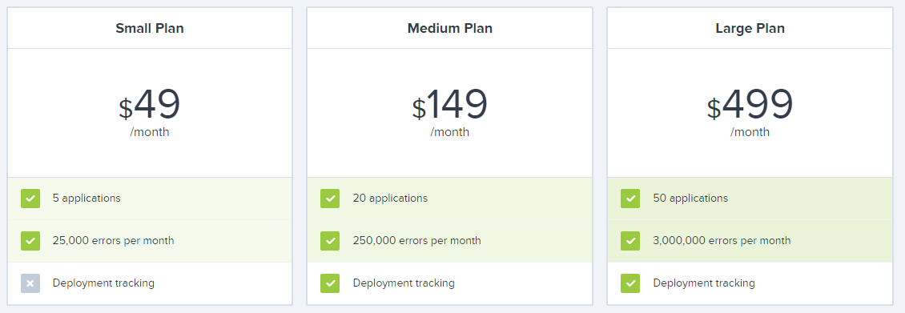
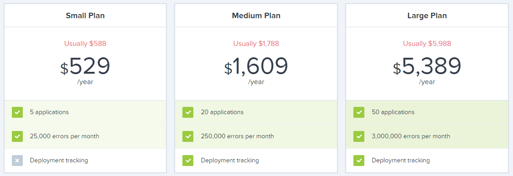
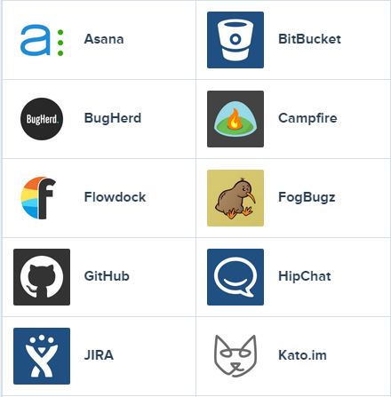
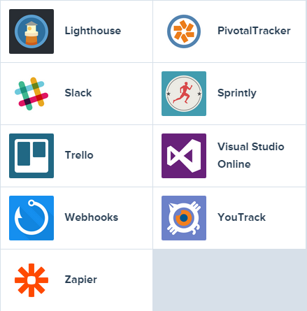

Une présentation de Jerry Chanut / @JerryChanut
Pourquoi la gestion d'erreur est importante ?
Pourquoi Raygun ?
Administration & Integration
Ne laissez pas un bug banal tuer votre application
Garder vos clients et utilisateurs contents
Augmenter la fiabilité et la disponibité
Plateformes et langages supportés
Démarrer rapidement & trouver des bugs encore plus rapidement
Abonnement mensuel
Abonnement annuel
Version on-premise disponible pour environ $30k par an
Rentrez en contact avec Raygun directement pour plus d'informations
Outils de gestion de projet
Issue tracking tools
Webhooks : intégration via API à des systèmes existants
Outils supportés
 